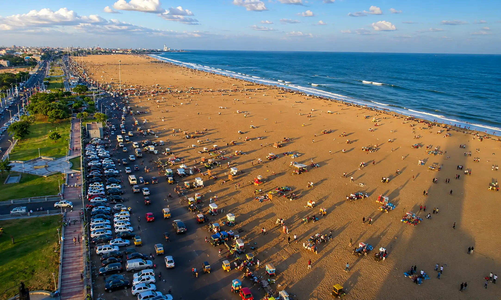
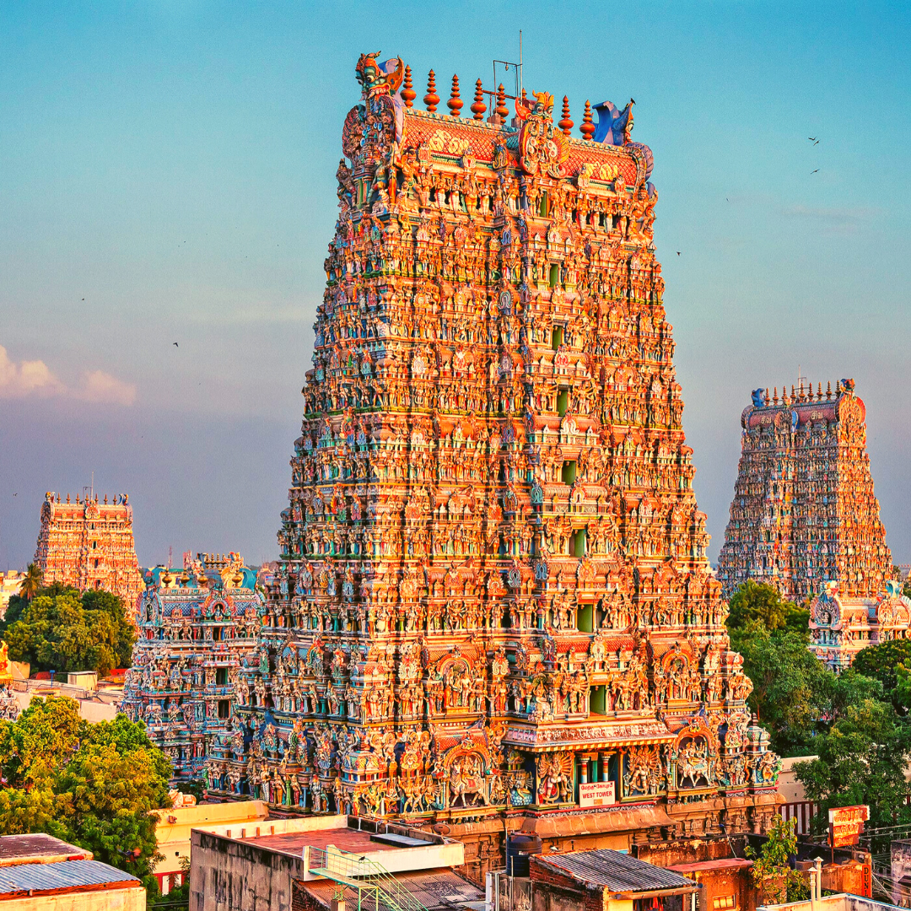
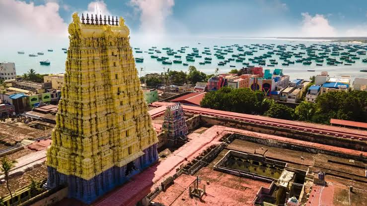
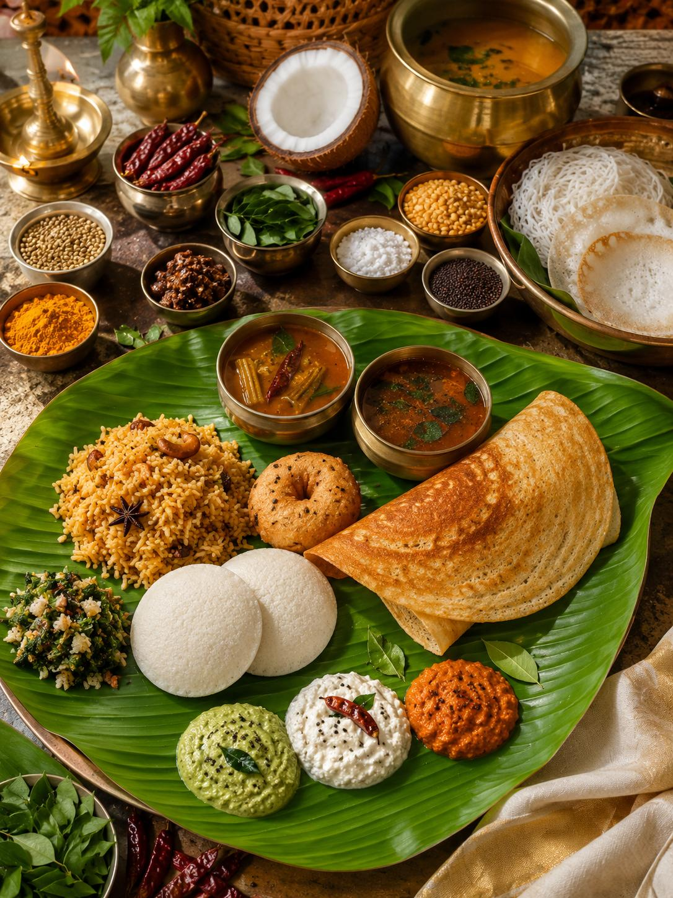

01
Chennai
The cultural capital of South India — famous for Marina Beach, ancient Kapaleeshwarar Temple, and Carnatic music season.

Discover the land of towering temple gopurams, ancient Sangam literature, mist-covered Nilgiri hills, holy coastlines, and rich culinary legacies.
Explore Tamil Nadu ↓Tamil Nadu is the custodian of one of the world's oldest surviving classical languages and civilizations, home to magnificent UNESCO Great Living Chola Temples and intricate stone carvings.
From the bustling cultural avenues of Chennai and the architectural marvels of Madurai to the tea plantations of Ooty and the sacred seas of Rameswaram, Tamil Nadu offers an inspiring journey through history.
Iconic temple towns, coastal retreats, and hill stations of Tamil Nadu.

The cultural capital of South India — famous for Marina Beach, ancient Kapaleeshwarar Temple, and Carnatic music season.

The Athens of the East — an ancient city anchored by the world-famous, colorfully sculpted towers of Meenakshi Amman Temple.

Queen of Hill Stations in the Nilgiri Mountains, renowned for rolling tea estates, botanical gardens, and heritage toy train rides.

A sacred island pilgrimage destination connected by Pamban Bridge, famous for Ramanathaswamy Temple's grand stone corridors.
Tamil cuisine is a celebrated balance of fermented rice batters, freshly ground spice blends, curry leaves, tamarind, and aromatic filter coffee.

India's oldest classical dance form, distinguished by fixed upper body, rhythmic footwork, and expressive facial storytelling.
Majestic gopurams, pillared mandapams, and stone-carved temple tanks built by Pallava, Chola, and Pandya emperors.
Centuries-old classical musical systems celebrated annually during Chennai's December Music Season, honoring saint Tyagaraja.
A four-day harvest thanksgiving festival celebrated with clay-pot boiling rice, colorful Kolam floor art, and temple fairs.
Discover all 28 states, local food specialties, and centuries of living traditions.
← Back to All States